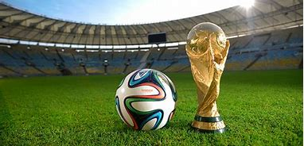
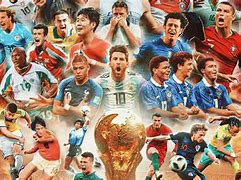

Fútbol
El fútbol es el deporte más popular del mundo, practicado por millones de personas en todo el planeta. Cada semana, millones de personas se reúnen para ver los partidos más importantes de la temporada.
Este es un deporte que se suele practicar desde cortas edades.
Desde la Copa del Mundo hasta los partidos locales, el fútbol une a culturas, países y generaciones, haciendo de cada partido una celebración.
Los mejores jugadores como Lionel Messi, Cristiano Ronaldo y Neymar se han convertido en íconos globales, no solo dentro del campo, sino también fuera de él.
Además de la popularidad del fútbol, existen muchas ligas profesionales que permiten que equipos de todo el mundo se enfrenten, como la UEFA Champions League, la Premier League y La Liga.



¿Te interesa saber más?